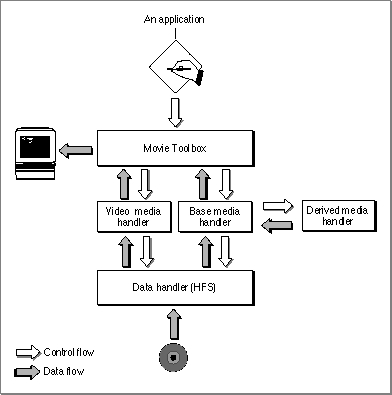
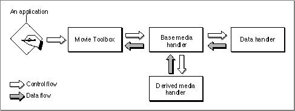

About Derived Media Handler Components
This section provides background information about media handler components in general and derived media handler components in particular. After reading this section, you should understand why media handler components exist and whether you need to create a derived media handler component.Media Handler Components
Media handler components allow the Movie Toolbox to play a movie's data. The Movie Toolbox, by itself, cannot read or write movie data. Rather, media handlers perform input and output services on behalf of the Movie Toolbox. The Movie Toolbox gains access to the appropriate media handler for a particular movie track by examining the track's media. That data structure identifies the media handler that created and maintains the media (see the chapter "Movie Toolbox" in Inside Macintosh: QuickTime
for more information about the relationship between a movie, its tracks, and each
track's media).Each media handler is primarily responsible for understanding the format and content of the media type it supports. The media handler is intimately familiar with the sample structure used in its media, the compression techniques used to store the media's sample data, and the performance characteristics of the device that stores the media.
During movie playback, the media handler draws its media's data on the screen and plays the media's sounds. The media handler may use the services of other managers such as the Image Compression Manager for compressed image data and the Sound Manager for sound data. When an application creates a movie, media handlers store the movie's data. The actual reading and writing of media data are performed by another component, the data handler. For details on the Image Compression Manager,
see Inside Macintosh: QuickTime. For more on the Sound Manager, see Inside Macintosh: More Macintosh Toolbox.Applications never directly use the services of media handlers. The Movie Toolbox controls all movie data storage and retrieval on behalf of QuickTime applications.
Figure 10-1 shows the logical relationships between applications, the Movie Toolbox, media handlers, and data handlers.
Figure 10-1 Logical relationships between the Movie Toolbox and media handlers

Apple had three primary goals for isolating the Movie Toolbox and QuickTime applications from the details of media data access. First, the isolation allows programmers who develop the Movie Toolbox and QuickTime applications to focus on the specifics of the problems they are addressing, freed from concerns about data access. Second, this architecture allows QuickTime to be easily extended to accommodate new storage devices and technologies. Third, by documenting the media handler interface, developers can create their own, special-purpose media handlers that work with QuickTime.
Derived Media Handler Components
Much of what a media handler component must do is common to all media handlers. Managing a connection with the appropriate data handler, retrieving movie data from media samples, and storing movie data into new samples account for a substantial part of every media handler's responsibilities. To make it easier for developers to create media handler components, Apple provides a base media handler component that performs most of the common duties of a media handler.Apple's base media handler component eliminates much of the work you would have to do to create your own media handler component. The base media handler interacts with both the Movie Toolbox and the appropriate data handler, so that your media handler only has to deal with service requests, and you can ignore many of the housekeeping functions. It understands the format of Apple's media samples and sample descriptions, so that your media handler only has to worry about the actual media data. Finally, it provides basic services that your media handler can use to accommodate unusual display environments.
When you build your media handler component on top of the base media handler,
your media handler is known as a derived media handler component. This terminology is borrowed from object-oriented development and refers to the fact that your
media handler is based on, or derived from, the services provided by Apple's base media handler. Figure 10-2 shows the relationship between the base media handler, derived media handlers, the Movie Toolbox, and data handler components.Figure 10-2 Relationship between the base media handler component and derived media handlers

You should consider deriving your media handler from Apple's base media handler component if your media requires low to moderate data throughput. Apple's base
media handler can support data rates up to 32 kilobits per second. This rate is adequate for such data types as text, sound effects, animation, annotations, or MIDI (Musical Instrument Digital Interface) sound data. However, Apple's base media handler is not appropriate for CD-quality sound, which may require data rates of up to 176 kilobits per second.
Subtopics
- Media Handler Components
- Derived Media Handler Components